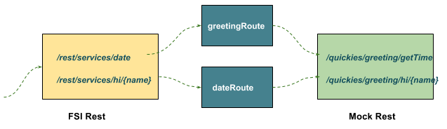

$ cd fuse-get-started/fis-rest
$ mvn clean package
$ java -jar target/fis-rest-1.0.0-SNAPSHOT.jarFormat/Bridge/Expose Rest
This example demomstrate use Camel Rest to bridge, format and expose on a Rest Web Service as below,

The FSI Rest use the route to format and call the backgroud rest service.
Table of Contents
Run with Spring Boot
Use the fowlling formated URL to test:
Run with OpenShift
oc new-project test --display-name="Test Project" --description="Test Project"
mvn -Dkubernetes.master=https://192.168.42.107:8443 -Dkubernetes.namespace=test -Dkubernetes.auth.basic.username=developer -Dkubernetes.auth.basic.password=developer -Dfabric8.mode=openshift -Dkubernetes.trust.certificates=true -Dfabric8.build.strategy=s2i -Dkubernetes.auth.tryServiceAccount=false -Dfabric8.generator.from=registry.access.redhat.com/jboss-fuse-6/fis-java-openshift -Dfabric8.generator.fromMode=docker -Dkubernetes.auth.tryKubeConfig=false clean fabric8:deploy
oc expose svc/fis-restUse the fowlling formated URL to test: